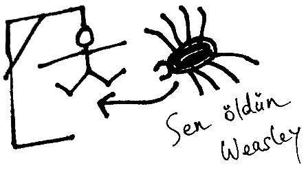
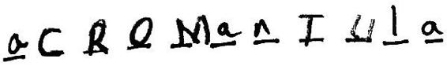
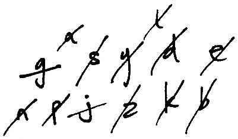
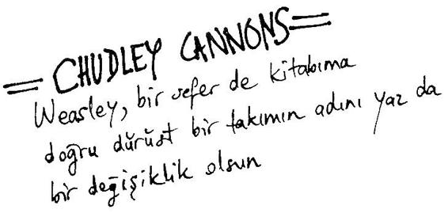
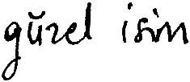

FANTASTİK CANAVARLAR
NELERDİR, NEREDE
BULUNURLAR?
NEWT SCAMANDER
ALBUS DUMBLEDORE'un
önsözü ile özel baskı
İSTANBUL
ve
bscurus Books
18a Diagon Yolu, Londra
Yapı Kredi Yayınları – 1622
Doğan Kardeş Kitaplığı – 161
Fantastik Canavarlar Nelerdir, Nerede Bulunurlar? / Newt Scamander
Özgün Adı: Fantastic Beasts & Where to Find Them
Çeviren: Sevin Okyay – Gül Sanoğlu
Kitap Editörü ve Canavar Adlarının Türkçesi: Kutlukhan Kutlu
Kapak Tasarımı: Richard Home
Sayfa Tasarımı ve Obscurus Logosunun Tasarımı: Polly Napper
Grafik Uygulama: Banu Kaşıkçı
Baskı: Şefik Matbaası
Çeviriye Temel Alınan Baskı: Bloomsbury, Londra, 2001
1. Baskı: İstanbul, Mart 2002
ISBN 975-08-0413-9
© Yapı Kredi Kültür Sanat Yayıncılık Ticaret ve Sanayi A.Ş., 2002
Metin © J.K. Rowling, 2001
Çizimler © J.K. Rowling, 2001
Yapı Kredi Kültür Sanat Yayıncılık Ticaret ve Sanayi A.Ş.
Yapı Kredi Kültür Merkezi
İstiklal Caddesi No. 285 Beyoğlu 80050 İstanbul
Telefon: (0 212) 252 47 00 (pbx) Faks: (0 212) 293 07 23
http://www.yapikrediyayinlari.com
e-posta: ykkultur@ykykultur.com.tr
İnternet Satış Adresi: http://www.estore.com.tr/bulvar/yky

